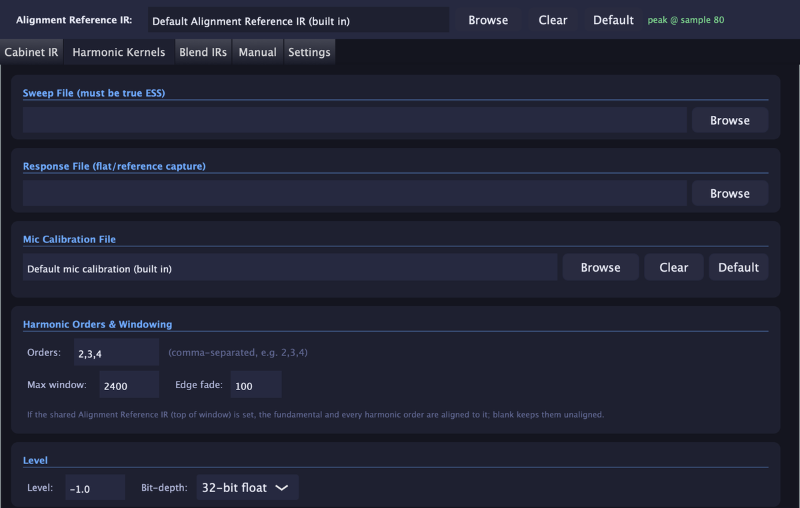
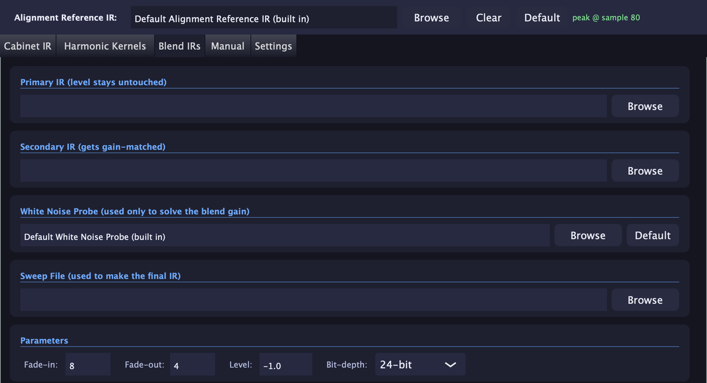
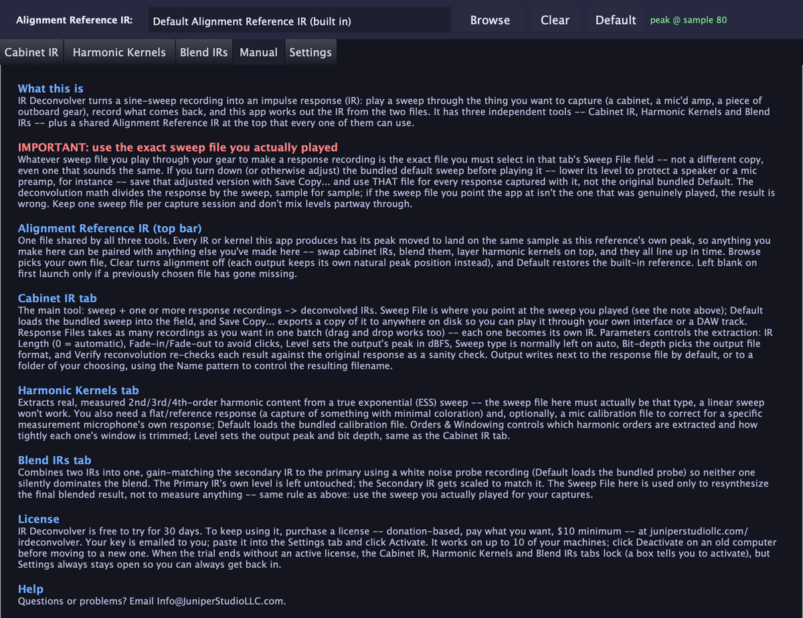

IR Deconvolver
Sweep in, impulse response out
Play a sine sweep through a cabinet, a mic'd amp or a piece of outboard gear, record what comes back, and IR Deconvolver works out the impulse response. Cabinet IRs, measured harmonic kernels and blended IRs, all lined up in time.
Donation-based pricing: pay what you want, from $10.
Mac: Apple Silicon (M1 or newer) · macOS 12 or newer.
Windows: 64-bit.
What it does
An impulse response (IR) is the fingerprint of a speaker cabinet, a mic'd amp or a piece of gear. The usual way to capture one is a sine sweep: you play a known sweep through the thing, record the result, and divide one by the other. IR Deconvolver does that division for you, quickly and in batches.
It has three independent tools, plus one shared Alignment Reference IR at the top of the window that all of them can use, so every IR and kernel you make lines up in time with the rest.
Cabinet IR
Pick the sweep you played and drop in as many recordings as you like. Each one becomes its own IR. Set the IR length, fades and output level, and let it re-check each result against your original recording.
Harmonic Kernels
Extracts measured 2nd, 3rd and 4th-order harmonic content from a true exponential sweep, with an optional mic calibration file for the measurement mic you used.
Blend IRs
Combine two IRs into one. The secondary IR is gain-matched to the primary using a white noise probe, so neither one silently dominates the blend.
Aligned to one reference
Everything you make lands on the same sample as the shared Alignment Reference IR, so you can swap, blend and layer results without them fighting in time. Use the built-in reference, pick your own, or turn it off.
Ready to use
A default sweep, alignment reference, white noise probe and mic calibration file are built in. Save a copy of the sweep to play through your interface or a DAW track.
Clean output
WAV files at 24-bit or 32-bit float, with output written next to your recording or to a folder you choose, named with a pattern you control.
How it works
1. Play the sweep
Send the sweep file through your cabinet, mic'd amp or gear.
2. Record the result
Record what comes back as a WAV file. Capture as many as you want in one session.
3. Deconvolve
Point the app at the sweep and your recordings and press Deconvolve. Your IRs are written out.
One rule that matters
Use the exact sweep file you actually played. If you turn the default sweep down before playing it, use Save Copy and select that adjusted copy for every recording made with it. The math divides your recording by the sweep sample for sample, so a different copy, even one that sounds the same, gives a wrong result.
Inside the app
Each tool has its own tab, and there's a built-in manual that is always open.



Frequently asked questions
What is IR Deconvolver?
IR Deconvolver is a Mac and Windows app from Juniper Studio LLC that turns a sine-sweep recording into an impulse response (IR). Play a sweep through a guitar cabinet, a mic'd amp or a piece of outboard gear, record what comes back, and the app works out the IR from the two files.
What can I make with it?
Three things: Cabinet IRs (a sweep plus one or more recordings becomes one IR per recording), Harmonic Kernels (measured 2nd, 3rd and 4th-order harmonic content from a true exponential sweep), and Blended IRs (two IRs combined into one, gain-matched so neither overpowers the other).
What do I need to get started?
A sweep file played through the thing you want to capture, and a recording of what comes back. The app includes a default sweep, and you can save a copy of it to play through your own interface or a DAW track.
Why do I have to use the exact sweep I played?
The deconvolution divides your recording by the sweep, sample for sample. If you turn the bundled sweep down before playing it, save that adjusted copy and point the app at that file for every recording made with it. A different copy, even one that sounds the same, gives a wrong result.
What does the Alignment Reference IR do?
It's one shared reference file at the top of the window. Every IR or kernel the app makes has its peak moved to land on the same sample as the reference's peak, so anything you make in the app lines up in time with everything else you make in it. You can use the built-in reference, pick your own, or turn alignment off.
What file formats does it write?
WAV files, at 24-bit or 32-bit float. You choose the level of the output peak in dBFS, and the Cabinet IR tool can re-check each result against your original recording (Verify reconvolution).
What computers does it run on?
Mac: Apple Silicon Macs (M1 or newer) on macOS 12 or newer. Intel Macs aren't supported. Windows: 64-bit Windows.
Is IR Deconvolver free?
You can download it and use everything free for 30 days, with no account and no credit card. To keep using it, pay what you want for a license: $10 minimum, $20 suggested.
How do license keys work?
After you pay, your license key is emailed to you right away. Paste it into the app's Settings tab and click Activate. One key works on up to 10 of your machines, and you can deactivate a machine to move the license to a new computer. If the trial ends without a license, the three tools lock, but Settings always stays open.
Try it free. Donation-based pricing.
The download is the full app, free to use for 30 days. No account, no credit card. IR Deconvolver is donation-based: if you keep it, pay what you want for a license. It's $10 minimum, $20 suggested, and you pick the amount at checkout.
1. Download
Install the app for your computer and open it. Everything works from the first minute.
2. Try it for 30 days
Capture your own gear. The built-in manual explains every control.
3. Get your key
Pay what you want, then paste the emailed key into the app's Settings tab and click Activate.
Moving to a new computer? Click Deactivate in the app's Settings on the old one, and that slot is yours again. Problems with a key? Email Info@JuniperStudioLLC.com and a real person will help.
IR Deconvolver © 2026 Juniper Studio LLC. Built with the JUCE framework © Raw Material Software Limited.